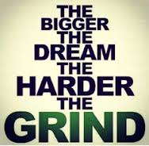
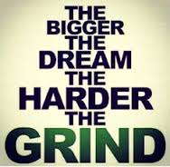

Sports Business Experience
 

Team Experience Description
Chicago Bears 
Working in the Fan Strategy and Analytics team, I conducted custom research projects on gamedays to collect demographic and marketing information about attendees through questionnaires and interviews. This data was then synthesized for execs. This work will help the Bears segment their fans into very detailed groups and create tailored marketing strategies around these unique demographics
Chicago White Sox 
Working for the White Sox Analytics team, we analyzed sales data for White Sox / Chicago Sports Depot and provided insights into customer buying behavior and future product/bundling/promotion recommendations. The project first focused on the Sports Depot and assessing what products were selling well. We found that high margin products included female merchandise and game day gear.
Papers and Presentations
2009 Honors Thesis on Scouting
2014 MIT MBA Case Competition
2014 UCLA Case Competition
Kellogg Innovation Network Challenge
2014 UCLA Case Competition
Kellogg Innovation Network Challenge
League and Affiliate Experience
Major League Baseball 
I worked with Labor Economics Team supporting league-wide initiatives including re-invigorating youth baseball, improving pace of game, optimizing the schedule, evaluating the Draft/CBA, and assessing competitive balance. Several of the pace of the game measures I recommended were implemented in the Arizona Fall League and Minor League Baseball.
Intersport
My fellow classmate and I delivered competitive analysis presentations in the areas of digital sports networks, sports trivia, and fantasy sports applications. We worked closely with the Media time to develop new products through consumer research, market testing, and survey analysis. In addition, we worked with Kellogg professors to develop a broader research thesis on the digital sports space in general
Biography
| Born | June 2, 1987 |
| Hometown | Iselin, New Jersey |
| College | New York University, Bocconi University (exchange), Northwestern Kellogg |
| Favorite Food | Baked ziti |
| Favorite City | Barcelona or Buenos Aires |
| Sports Teams | Yankees, Jets, Devils, Nets |